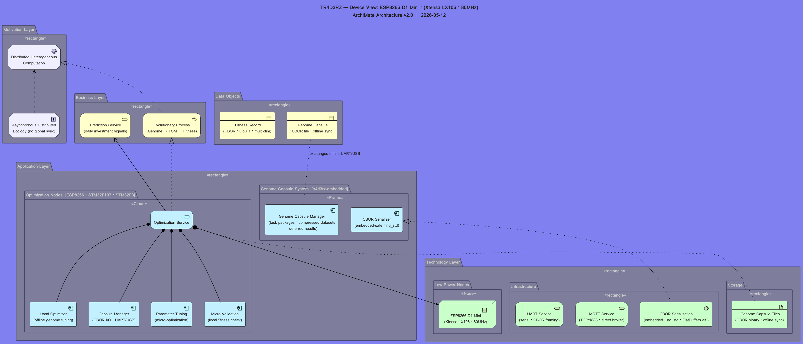

TR4D3RZ — Interactive ArchiMate Device View · Click any element for details
| Active Structure | Behavior | Passive Structure | Motivation | |
|---|---|---|---|---|
| Motivation Layer |
Distributed Heterogeneous
Computation Asynchronous Distributed
Ecology (no global sync) |
|||
| Business Layer |
Evolutionary Process
(Genome → FSM → Fitness) Prediction Service
(daily investment signals) |
Genome Capsule
(CBOR file · offline sync) Fitness Record
(CBOR · QoS 1 · multi-dim) |
||
| Application Layer |
Parameter Tuning
(micro-optimization) Micro Validation
(local fitness check) Local Optimizer
(offline genome tuning) Capsule Manager
(CBOR I/O · UART/USB) Genome Capsule Manager
(task packages · compressed datasets · deferred results) CBOR Serializer
(embedded-safe · no_std) |
Optimization Service
|
||
| Technology Layer |
ESP8266 D1 Mini
(Xtensa LX106 · 80MHz) CBOR Serialization
(embedded · no_std · FlatBuffers alt.) |
MQTT Service
(TCP:1883 · direct broker) UART Service
(serial · CBOR framing) |
Genome Capsule Files
(CBOR binary · offline sync) |
